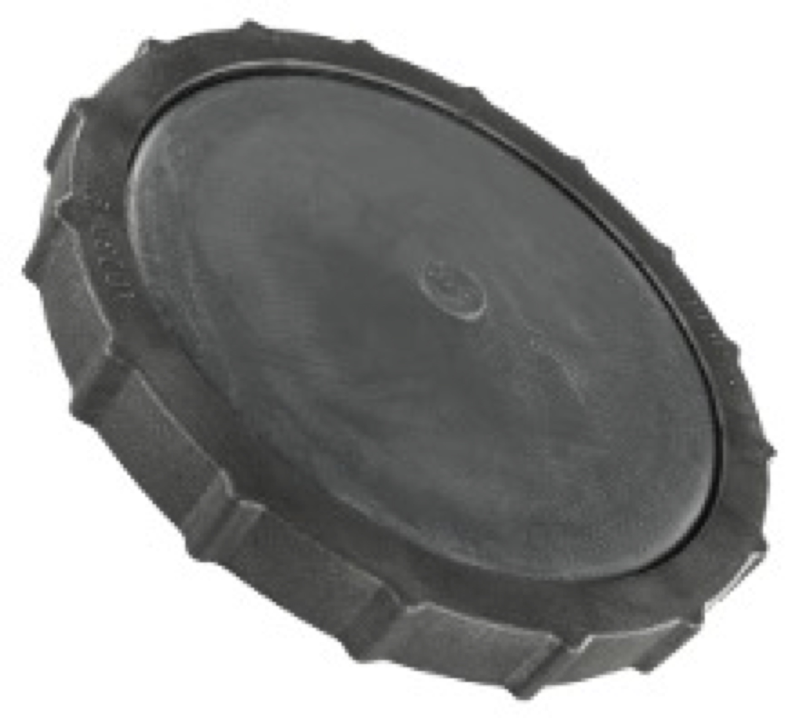
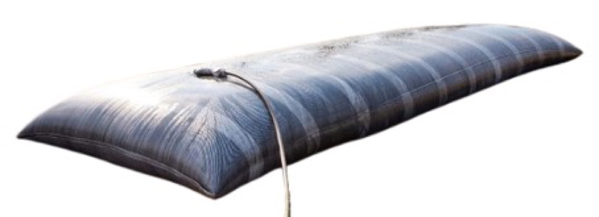
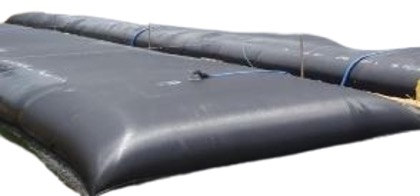

MBBR & SAFF biological carrier media, aeration diffusers and tube settlers, plus complete STP/ETP wastewater treatment equipment for municipal sewage and industrial effluent plants.

Genoasis specialises in MBBR and SAFF biological carrier media for STP and ETP plants, backed by a comprehensive range of wastewater treatment equipment covering the full treatment train from biological aeration through to sludge dewatering. Our aeration diffuser systems are engineered for maximum oxygen transfer efficiency, reducing blower energy consumption by up to 40% compared to older coarse-bubble and surface aeration technologies.
Whether you are commissioning a new municipal sewage treatment plant, upgrading an industrial effluent treatment system, or retrofitting an existing activated sludge process with MBBR biofilm technology, our team provides product selection, layout design, and technical support to ensure compliant, cost-effective treatment performance.
Wastewater treatment equipment is supplied to projects across India, the Middle East, and Africa. With rapid urbanisation driving urgent investment in sanitation infrastructure, we are actively supplying aeration systems, tube settlers, MBBR media, and dewatering equipment to treatment plants in Nigeria, Kenya, South Africa, Ghana, Tanzania, and Ethiopia.

EPDM and polyurethane membrane disc and tube diffusers producing 1–3 mm bubbles for high oxygen transfer efficiency (SOTE 22–35%). Available as disc, panel, tube, and plate configurations for all tank geometries.

Rigid plastic and ABS coarse bubble diffusers for mixing and oxygen transfer in anoxic, anaerobic, and equalization tanks. High flow rates per unit with low clogging tendency; ideal for high-solids environments.

Inclined PVC tube settler modules for enhancing the clarification capacity of existing and new sedimentation tanks. Increase settling surface area by 6–8x, enabling higher hydraulic loading rates without tank expansion.

High-density polyethylene (HDPE) and polypropylene plastic biofilm carrier media for MBBR and SAFF biological treatment reactors. Specific surface area from 400 to 900 m²/m³ depending on carrier type.

Stainless steel multi-disc screw press dewaterers for continuous, low-energy sludge thickening and dewatering. Suitable for municipal and industrial sludge with solids content from 0.2% to over 25% cake dryness.

High-throughput belt filter press systems for gravity drainage, low-pressure, and high-pressure dewatering of conditioned biological and chemical sludge. Produces a handleable cake for direct disposal or composting.
Fine bubble diffuser systems achieve oxygen transfer efficiencies of up to 35% SOTE, dramatically reducing blower power consumption compared to surface aerators.
Optimised bubble size and diffuser layout maximises contact time between air and mixed liquor, improving alpha-SOTE and reducing the installed blower capacity required.
Our equipment delivers treated effluent of sufficient quality for industrial reuse, irrigation, and indirect potable reuse, supporting zero liquid discharge (ZLD) goals.
Diffuser grids, tube settlers, and MBBR media systems can be designed to retrofit existing tank structures without major civil works, minimising plant shutdown time.
Genoasis supplies all the components you need alongside wastewater equipment.
Sludge transfer pumps, aeration blowers, and effluent feed pumps for ETP and STP systems.
View PumpsCoagulants, flocculants, pH correction chemicals, and defoamers for wastewater conditioning.
View ChemicalsCOD test kits, BOD meters, pH meters, dissolved oxygen meters, and online effluent quality monitors.
View InstrumentsUV disinfection and ozone systems for tertiary wastewater treatment and reuse.
View DisinfectionTechnical answers for ETP and STP project engineers in India, UAE, Saudi Arabia, and the GCC.
Genoasis supplies fine bubble disc diffusers and coarse bubble tube diffusers for aeration systems, MBBR and SAFF biofilm carrier media, tube settlers and lamella plate clarifiers for suspended solids removal, screw press dewatering machines, and belt press thickeners for sludge dewatering. Suitable for municipal STPs, industrial ETPs, and water reuse systems.
MBBR (Moving Bed Biofilm Reactor) is a biological wastewater treatment technology where bacteria grow on plastic carrier media suspended in an aeration tank. We supply HDPE carrier media with specific surface areas from 300 to 1,200 m²/m³ for BOD, COD, nitrification, and denitrification - widely used in India, the Middle East, and worldwide for industrial ETP and municipal STP upgrades.
Yes. We supply fine bubble disc, tube, and panel diffusers for activated sludge and MBBR/SAFF wastewater treatment systems across India. Fine bubble diffusers achieve standard oxygen transfer efficiencies (SOTE) of 5–8% per metre of submergence, significantly outperforming coarse bubble aeration. We supply both EPDM membrane disc diffusers and ceramic diffuser elements.
Yes. Genoasis supplies lamella tube settlers and inclined plate settlers for upgrading sedimentation performance in existing clarifiers and DAF units in India, the Middle East, and worldwide. Tube settlers increase settling surface area by 6–10x without requiring physical expansion of the tank, making them ideal for capacity upgrades in existing municipal water and wastewater treatment plants.
Yes. Genoasis supplies fine and coarse bubble diffusers, tube settlers, MBBR carrier media, screw press and belt press dewatering systems across Africa, including Nigeria, Kenya, South Africa, Ghana, Tanzania, and Ethiopia. Africa's rapidly growing urban populations are driving investment in new municipal sewage treatment plants and industrial ETPs - we are experienced in supplying equipment for these projects and can support procurement, technical documentation, and shipping to African ports.
Contact our team for pricing, availability, and technical specifications tailored to your requirements.